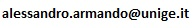

Publications
Contacts
|
Short BIO Publications Contacts |
His current focus is on developing cutting-edge automated reasoning techniques and on using them to build a new generation of push-button software verification and debugging tools supporting the development of complex, large-scale, distributed IT applications.
| Email: |
 |
| Phone: |
+39 010 353 2216 |
| Fax: |
+39 010 353 2948 |
| My PGP key is... |
here. |
| You can find me here: |
Villa Bonino, 1st floor, Viale F. Causa, 13 16145, Genova, Italy. |